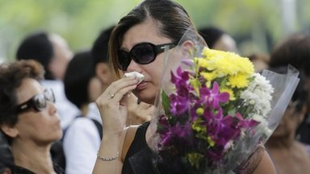
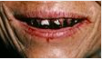

Singapore mourns founding father
Singapore begins seven days of national mourning
following the death of Lee Kuan Yew, founder of the modern city-state.
Lee Kuan Yew: Asia media
Singaporeans grieve for 'charging lion'
'A towering figure'
Obituary: Lee Kuan Yew
Features and Analysis
-
'Charging lion'
Singaporeans mourn leader Lee Kuan Yew
-
'Small feet, big lives'
China's last foot-bound women
-

'Deadly buzz'
The cancer legacy of Asia's mind-altering nuts
-
'Best friends'
Does Ghani visit signals start of better US-Afghan relations?